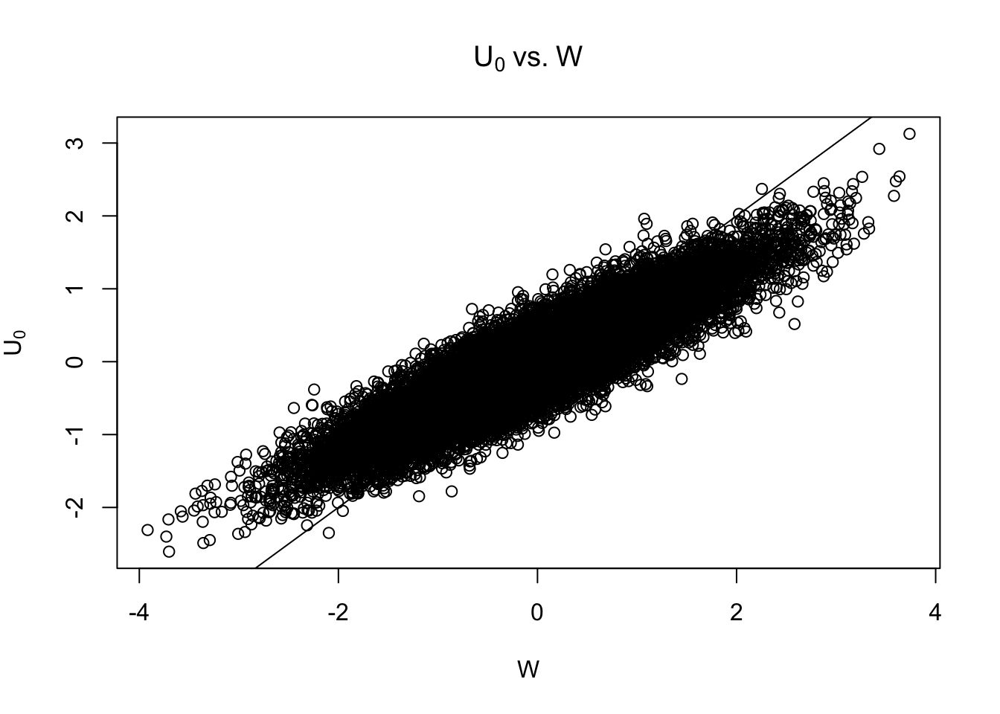
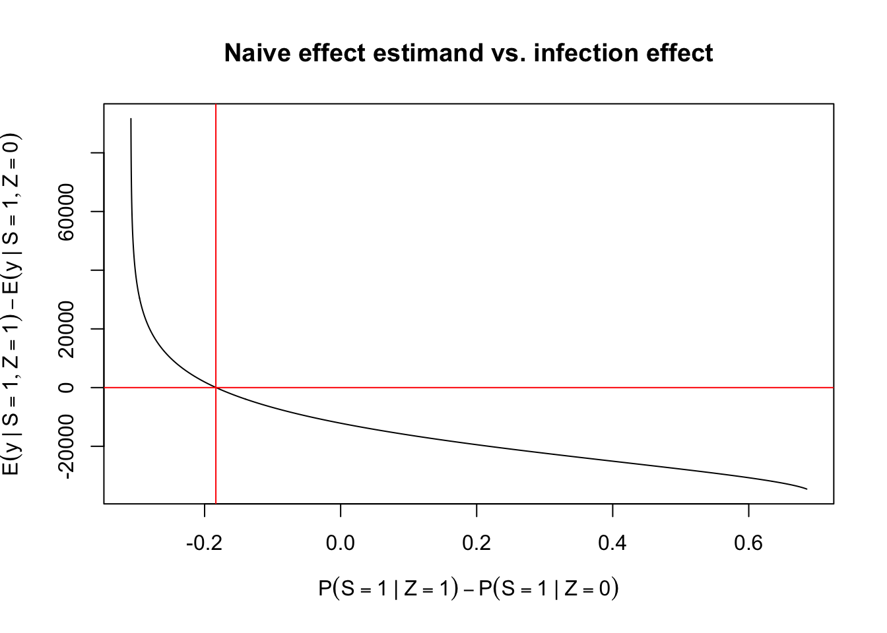

I took a class in the first year of my Master’s program about missing data from Ben Goodrich. The class was all about what to do when you encountered some sort of missing observations when analyzing a dataset. Missingness can arise for many reasons when analyzing data: it can arise from people declining to participate in a survey, survey respondents refusing to answer a question, from patients who drop out of a randomized study, or from the fact that an outcome of interest is only observable for a subset of patients who experience (or don’t experience) an intermediate event.
When dealing with missing data, it is crucial that we understand why an observation, be it an outcome, a covariate, or a unit, is missing. If the
The Heckman selection model was one of the first examples we were shown in class of a missing data problem where the probability that an individual had a missing observation depended on the value of the missing observation (Heckman 1979). These are the hardest problems to address in missing data because
A standard survey example would be that people with very high and those with very low incomes may decline to report income on a survey more than those with moderate incomes. In the vaccine example, the selection effect we are concerned with is that people with weaker immune systems may become infected even with a vaccine and thus have higher viral loads. A naive comparison of viral loads between vaccinated and unvaccinated people might show that the vaccine increases viral loads in those who are vaccinated (Hudgens, Hoering, and Self 2003).
To make things a little more concrete, suppose we’re interested in learning about the how vaccines moderate post-infection viral loads. The precise quantity we’re interested in is the change in post-infection viral load for people who would be infected with the pathogen no matter their vaccination status. These unlucky people are referred to as the ``Always-Infected’’ group. We might be tempted to get a rough estimate of this quantity by comparing viral loads in infected people in the vaccinated group vs. those in the unvaccinated group. The problem with this analysis is that if the vaccine has any causal effect on infection the individual characteristics of the two groups, infected-vaccinated people and infected-unvaccinated people, may differ. In this problem missingness arises in two forms. The first is that we observe only one outcome for each participant in our trial: the outcome corresponding to the treatment arm assignment. This is what Holland called the fundamental problem of causal inference. The second is more unique to this setting: we observe viral loads only in those who are infected.
Let \(Z_i\) be the vaccine treatment, with \(Z_i = 1\) indicating treatment and \(Z_i = 0\) indicating placebo. For the ease of exposition, let’s suppose that treatment is randomized. We don’t need more selection bias (though selection into treatment could very well be a source of additional selection bias). Let \(S_i(z)\) be the infection status of individual \(i\) with vaccination status \(z\), and let \(Y_i(z)\) be the viral load of individual \(i\). If \(S_i(z) = 0\), we set \(Y_i(z) = *\).
Suppose we also observe the study site, denoted as \(R_i\). This is the hospital or health clinic that enrolled patient \(i\) into the study. This study site is assumed to impact that probability of infection, but it is assumed to be independent of post-infection viral load. The standard term for a variable like \(R_i\) is an instrumental variable.
The model we’ll simulate data from is the following: \[
\begin{aligned}
\log Y_i(z) & = \mu_Y(z) + \sigma_z\, U_i(z) \\
\tilde{S}_i(z) \mid R_i & = \mu_S(R_i) + z \,\gamma_S + W_i \\
S_i(z) & = 1(\tilde{S}_i(z) > 0) \\
(U_i(0),U_i(1),W_i) & \sim \text{Normal}(\mathbf{0}, \boldsymbol{\Omega})
\end{aligned}
\] The individuals who are always infected are identified as those with \(\{S_i(1) = 1,S_i(0) = 1\}\). One key assumption of this model is that these individuals can be identified with certainty. This is also known as a assumption. To see why, let’s see what our model implies about the always-infected event: \[
\begin{aligned}
\{S_i(1) = 1, S_i(0) = 1\} & = \{\tilde{S}_i(1) > 0, \tilde{S}_i(0) > 0\} \\
& = \{\mu_S(R_i) + \gamma_S > -W_i, \mu_S(R_i) > -W_i\} \\
& = \{\min(\mu_S(R_i) + \gamma_S,\mu_S(R_i)) > -W_i\}
\end{aligned}
\] The event that \(S_i(z) = 1\) is equivalent to \[
\{\mu_S(R_i) + \gamma_S > -W_i\}
\] Thus, if \(\gamma_S\) is less than zero, as we would hope in a vaccine efficacy trial, then those who are infected in the vaccine arm are also those who would be infected in the placebo arm. The monotonicity assumption is a consequence of two assumptions of the model: - there is one error term for the probit regression - there is no individual heterogeneity in the coefficient \(\gamma_S\).
The likelihood for the model is fairly straightforward: For individuals who remain uninfected, the likelihood term corresponds to \(P(\tilde{S}_i(z) \leq 0)\), which corresponds to the univariate standard normal CDF evaluated at \(-\mu_S(z,r)\), or: \[
P(\mu_S(z,r) + W_i \leq 0) = \Phi(-\mu_S(z,r))
\]
The likelihood for an individual \(i\) who is infected corresponds to observing \(\log Y_i(z) = y_i\) and \(\tilde{S}_i(z) > 0 \mid \log Y_i(z) = y_i, R_i = r_i\): \[
\begin{aligned}
L_i(\theta) & = \frac{1}{\sqrt{2\pi} \sigma_z}\exp\left(-\frac{1}{2\sigma_z^2}(y_i - \mu_Y(z_i))^2\right) \\
& \Phi\left(\frac{\mu_S(z_i) + \frac{\rho_{z_i}}{\sigma_z}(y_i - \mu_Y(z_i))}{\sqrt{1 - \rho_{z_i}^2}}\right)
\end{aligned}
\tag{1}\]
where \(\rho_z = \text{Cor}(W_i,U_i(z))\).
To get a sense for what this model implies about the treatment effect, let’s examine the conditional expectation of \(Y_i(z)\) given \(\tilde{S}_i(z) > 0\) when a patient is vaccinated vs. when the patient is unvaccinated:
\[
\tau^\text{naive} = \mathbb{E} \left[Y_i(1) \mid \tilde{S}_i(1) > 0 \right] - \mathbb{E} \left[Y_i(0) \mid \tilde{S}_i(0) > 0 \right]
\] This is what we’ll call the naive estimand, because it conditions on a post-treatment outcome, namely infection, which can induce selection bias, as we’ll see.
The expectation \(\mathbb{E} \left[Y_i(z) \mid \tilde{S}_i(z) > 0 \right]\) is the following:
\[
\begin{aligned}
\frac{(2 \pi\sigma_z^2)^{-1/2}}{\Phi(\mu_S(z_i))}\int_{-\infty}^{\infty} \exp\left(y-\frac{1}{2\sigma_z^2}(y - \mu_Y(z_i))^2\right)
\Phi\left(\frac{\mu_S(z_i) + \frac{\rho_{z_i}}{\sigma_z}(y - \mu_Y(z_i))}{\sqrt{1 - \rho_{z_i}^2}}\right) dy
\end{aligned}
\] To my knowledge, this doesn’t have a closed form expression because of the exponentiation of \(y\), though there might be a clever way to evaluate this integral. We can, however, use R’s 1-d numerical integration routine to approximate this expectation.
The code below evaluates \(\tau^\text{naive}\), as well as
First we’ll explore a scenario where there is high positive correlation between the errors in the viral load equation and the latent variable related to infection. We set \(\rho_1 = \rho_0 = 0.9\), \(\sigma_0 = \sigma_1 = 0.5\), \(\mu_Y(0) = 10\) and \(\mu_S(0) = -1.5\). Let the true effect of the vaccine on mean log-viral load be \(\delta_y = -0.25\).
We will plot how the naive estimand of viral load effect changes with the change in infection probability.
effs <-seq(-3, 3, by =0.01)p_s <-sapply(effs, \(x) delta_s(-0.5, x)) estimand <-sapply(effs, \(x) f_naive_est(rho =0.9, sd_y =0.5, mu_y =10, mu_s =-1.5, s_eff = x, y_eff =-0.25))p_change_in_sign <- p_s[which.min(abs(estimand))]plot(p_s, estimand,main ="Naive effect estimand vs. infection effect",ylab =bquote(E(y ~"|"~ S ==1, Z ==1) -E(y ~"|"~ S ==1, Z ==0)),xlab =bquote(P(S ==1~"|"~ Z ==1) -P(S ==1~"|"~ Z ==0)),type="l")abline(v = p_change_in_sign, col ="red")abline(h =0, col ="red")

This graph shows that as the vaccine becomes more effective at preventing infection, the apparent benefit of the vaccine on viral load decreases. In fact, at around a -0.18 decrease in the probability of infection, the naive estimand shows that the vaccine increases viral load, which is not the case.
If we fix a scenario and
effs <-seq(-3, 3, by =0.01)p_s <-sapply(effs, \(x) delta_s(-0.5, x)) estimand <-sapply(effs, \(x) f_naive_est(rho =0.9, sd_y =0.5, mu_y =10, mu_s =-1.5, s_eff = x, y_eff =-0.25))p_change_in_sign <- p_s[which.min(abs(estimand))]plot(p_s, estimand,main ="Naive effect estimand vs. infection effect",ylab =bquote(E(y ~"|"~ S ==1, Z ==1) -E(y ~"|"~ S ==1, Z ==0)),xlab =bquote(P(S ==1~"|"~ Z ==1) -P(S ==1~"|"~ Z ==0)),type="l")abline(v = p_change_in_sign, col ="red")abline(h =0, col ="red")

Note that \(\rho_{01} = \text{Cor}(U_i(0),U_i(1))\) does not enter into the likelihood, which makes sense because we’ll never observe both \(S_i(0)\) and \(S_i(1)\) for the same individual. This does not mean that we won’t have any information about \(\rho_{01}\); because \(\boldsymbol{\Omega}\) must be positive definite, the \(\det \boldsymbol{\Omega} > 0\). This means that what we do learn about \(\rho_0\) and \(\rho_1\) will constrain the domain of \(\rho_{01}\) so that \(\det \boldsymbol{\Omega} > 0\). This translates to the following bounds on \(\rho_{01}\)\[
\rho_{01} \in \left(\rho_0\rho_1 - \sqrt{1 - \rho_0^2 - \rho_1^2 + \rho_0^2\rho_1^2},\, \rho_0\rho_1 + \sqrt{1 - \rho_0^2 - \rho_1^2 + \rho_0^2\rho_1^2}\right)
\] If we incorporate prior information, the asymptotic posterior for \(\rho_{01}\) will take on the shape of the conditional prior for \(\rho_{01}\) given the values for \(\rho_0\) and \(\rho_1\).
Given our focus on comparing the impact of vaccination on viral load, the target causal estimand is a measure of the average decrease (hopefully) in viral load caused by vaccination in individuals who are always infected. Mathematically, this is: \[\mathbb{E}[Y_i(1) - Y_i(0) \mid S_i(1) = S_i(0) = 1].\] This estimand is somewhat odd in that we can never observe both infection outcomes, so we can never calculate this estimand exactly from observed data without extra assumptions. I explained above why we can’t equate this target estimand with the ``naive’’ version, the difference in viral load between vaccinated and unvaccinated people: \[
\mathbb{E}[Y_i(1) \mid S_i(1) = 1] - \mathbb{E}[Y_i(0) \mid S_i(0) = 1].
\] Logically, it makes sense, because the naive estimand is a mixture over several groups, instead of just the always-infected group, but we’ll simulate some data to get a better sense of how different the two estimands can be.
In our simulated example, we’ll suppose we have a randomized vaccine trial with 20,000 participants spread evenly across 10 study sites. We’ll set \(\rho_0\) and \(\rho_1\) to \(0.75\), which equates to strong residual correlation between infection risk and viral load; that might be reasonable if there is an unobserved factor impacting both infection and viral load. Maybe this is prior exposure to the virus plus genetic factors related to immune system health.
The covariates we’re including in the infection risk equation, \(\mu_S(z)\) are age and study site, while the only covariates we’re including in the viral load model are categorical age predictors.
The plot of \(U_0\) vs. \(W\) gives a sense of how related the two error terms are:
The covariates we will include in the model are age, which we treat as a categorical variable, the study site, which is also treated as a categorical variable, and the binary treatment variable, which is assumed to be balanced within study sites.
After all is said and done, the finite-sample estimator for the population estimand is -63,883, with a standard error of 6888.1207534 while the naive estimator for the population estimand is 41,600 with a standard error of 8335.141496. Note that these standard errors are understated a bit because the selection indicators are treated as fixed. In reality, both the selection and the outcome are random, so a more complete standard error calculation would account for the randomness in both sets of outcomesboth sets of outcomes.
This means that the naive estimator understates the benefit of the vaccine for people who are always infected by about 165%.
The approximate standard error for the naive estimator is 6888.1207534, while the approximate standard error .
Let’s build the Stan model block by block. First, the data block needs to take in the sizes and types of all the matrices and vectors that we’ll need to fit the model.
We need the number of observations, N, the number of negative and positive cases (N_neg and N_pos). We also need the dimensions of the predictors for the \(S\) equation and the \(Y\) equation, D_S and D_Y. The observed viral loads are collected into a length-N_pos vector Y, while the observed infection status and treatment assignment are collected into length-N binary integer arrays S and Z. Finally, we have the predictors for the \(Y\) equation, X_Y, which is an N_pos by D_Y matrix, and the predictors for the \(S\) equation, which is an N by D_S matrix.
Transformed data block
The transformed data block is needed to collect the indices, measured from \(1,\dots,N\), of the negative cases (\(S_i = 0\)) and positive cases (\(S_i = 1\)). The reason we need this information is because the likelihood contribution to the infection status probit model, shown in Equation 1, requires the value of the log-viral load, so we’ll need to match the infection status outcomes to the viral load outcomes. We could do this matching in the R code outside the Stan model, but I prefer to do it within the Stan code so everything is in one place. We’ll collect the indices of the positive cases in n_pos, which is an array of length N_pos and holds integers between 1 and N, while negative case indices are collected in n_neg, defined similarly.
The other piece of information the infection status likelihood will need for positive cases is the value \(\rho_z\), which depends on the individual treatment assignment. This information is collected in the vector Z_idx.
The parameter block is where we define which unknown parameters we need to estimate with our model. Our unknown parameters is the set: - \(\boldsymbol{\Omega}\): correlation matrix between the error terms for the regressions - \(\sigma_0\): error standard deviation for log-viral load regression in placebo group - \(\sigma_1\): error standard deviation for log-viral load regression in treatment group - \(\beta_y\): regression coefficients for the log-viral load regression - \(\beta_s\) - \(\gamma_s\) _y)$, the correlation matrix for the errors. In our case, we have a
Some comments on the Stan code are in order. The data block is pretty straightforward, though it’s worth keeping in mind that we’ll need to keep track of three dimensions: the total number of data points, the number of infected and uninfected patients. This is because we’ll only have access to viral loads in the infected patients.
Let’s generate some data to see how the errors change how the .
First, let’s see whether the
References
Heckman, James J. 1979. “Sample Selection Bias as a Specification Error.”Econometrica 47 (1): 153. https://doi.org/10.2307/1912352.
Hudgens, Michael G., Antje Hoering, and Steven G. Self. 2003. “On the Analysis of Viral Load Endpoints in HIV Vaccine Trials.”Statistics in Medicine 22 (14): 2281–98. https://doi.org/10.1002/sim.1394.